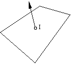

Previous
-- Next
SHADING ALGORITHMS
- General Process
- polygons are shaded one at a time
- for a given point on a polygon, we need to know:
surface normal at point
direction and intensity of incident light rays
material properties
viewing direction
- using the illumination equation, we can calculate the resulting reflection intensity I in the viewing direction for the given point
- Flat Shading (constant shading, faceted shading)
- use averaged normal (face normal) of polygon
- find intensity I for center of polygon
- fill all pixels of polygon with same intensity I

Characteristics of Flat Shading:
- constant color for each polygon
- different color shade for neighboring polygons if orientation (face normal) varies
- requires only 'fill area'
- very fast algorithm, low quality results
- Gouraud Shading (intensity interpolation)
- use vertex normals (one normal per vertex)
- for each vertex, find intensity I (I1, I2, I3, I4)
- interpolate intensities along polygon boundaries (Il, Ir)
- interpolate intensities along scan lines (Ip)

Characteristics of Gouraud Shading:
- correct intensity calculation only at vertices
- specular highlights can only be caught at vertices
- requires linear color interpolation (intensities = colors)
- normals can be replaced by given color per vertex for color coding applications
- typically used in VR viewing
- fast if hardware supported, good quality results
- Phong Shading (vector interpolation)
- use vertex normals
- interpolate normals along polygon boundaries (Nl, Nr)
- interpolate normals along scan lines (Np)
- for each point on scan line, find intensity Ip from local normal vector Np

Characteristics of Phong Shading:
- involves linear normal interpolation
- correct intensity calculation at each surface point
- specular highlights can be caught at any point
- not yet common in VR viewing
- slow, superior quality, smooth results
Previous
-- Next